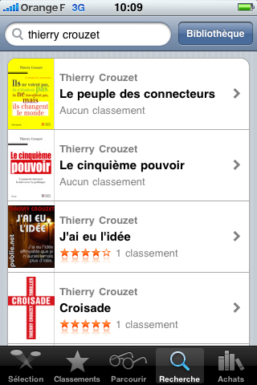

iBooks Store

Mes livres sont disponibles au format ePub. En France, Canada, Allemagne, UK, USA, ils sont directement accessibles depuis l'iBooks Store d'Apple sur iPad, iPhone et iPod (l'application iBooks doit être installée). On peut les feuilleter et les acheter.
Liens directs vers iBooks Store
- La tune dans le caniveau
- J’ai eu l’idée
- Genius Locus
- Propulseurs dans le flux
- Le peuple des connecteurs
- Le cinquième pouvoir
- L'alternative nomade
- Équinoxe d'automne
Sommaire | Texte publié mardi 29 juin 2010